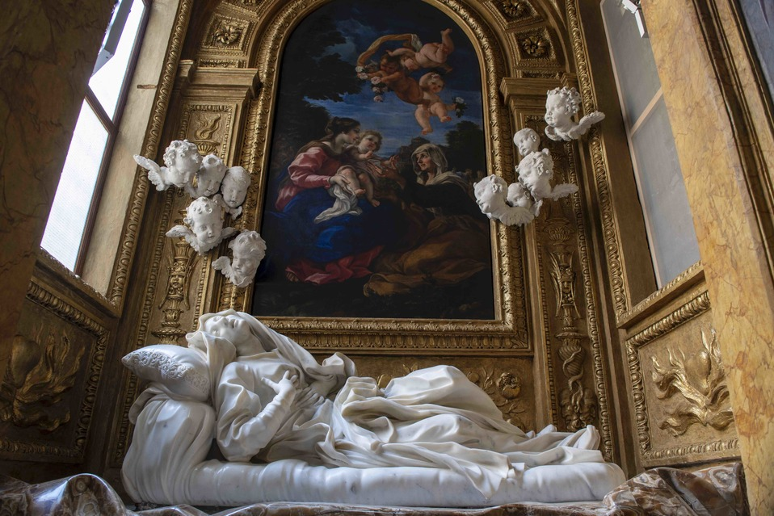

Gian Lorenzo Bernini (1598-1680) was an Italian sculptor, architect and Baroque artist known for his impressive works of
art that are often characterised by their drama, expressiveness and detail. Bernini left an indelible mark on the
history of European art.
Among Bernini's most famous works are the statues of David, Apollo and Daphne, and The Ecstasy of Saint Teresa. He is
also known for his work in St. Peter's Basilica in Rome, where he was commissioned to decorate the Cornaro Chapel and to
build the famous staircase in St. Peter's Square.

Bernini's style is often described as theatrical and emotive. His works of art often depict moments of tension and intense emotion, and are characterised by a high degree of realism and detail. Bernini was also noted for his ability to create works of art that appeared to move and change according to the viewer's angle of vision, creating a sense of dynamism and life in his sculptures.
Bernini's influence on the history of European art is undoubted. His techniques and approaches have been studied and emulated by generations of later artists, and his work has been the subject of numerous exhibitions and tributes around the world. The combination of drama, expressiveness and realism in his work remains a source of inspiration for artists around the world.



TRY SLIDING THE IMAGE
Gian Lorenzo Bernini was one of the most influential figures of Baroque art in Italy. His sculptural and architectural
work had a major impact on the evolution of the Baroque style in the 17th century and had a great influence on later
artists.
Bernini also had a major impact on Baroque architecture. His designs for St. Peter's Square in Rome and his work on St.
Peter's Basilica set the standards for Baroque religious architecture. His use of space, light and shadow, as well as
the combination of architectural and sculptural elements, influenced many later architects.
In short, Bernini's influence on Baroque art can be seen in his technical innovation and dramatic approach to sculpture,
as well as in his integrated approach to architecture and sculpture in his architectural work. His legacy is still
evident in the work of later artists and architects, demonstrating his lasting impact on the history of art.